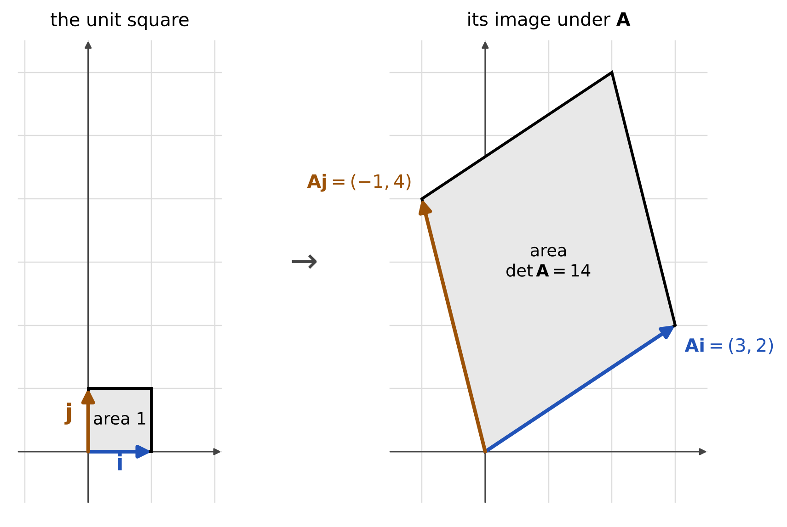

import numpy as np
B = np.array([[2, 1, 3], [0, -1, 4], [1, 2, 0]])
print(np.linalg.det(B))-8.999999999999998Core
Builds on Chapter 4, Chapter 5.
Every square matrix has a single number attached to it, its determinant. It is often taught as a formula to memorise, but it has a simple meaning: it tells you how much the matrix scales areas (in two dimensions) or volumes (in three), and whether it turns space over. Almost every property of determinants follows from that one idea.
Drag the arrow tips, type entries or pick a preset, and compare the area (or, in 3D, the volume) of a shape before and after the transformation. The ratio is always the determinant. Try Reflect and Squash flat.
Things to notice:
A linear transformation turns the grid of unit squares into a grid of identical parallelograms (Chapter 4). So every unit square has its area multiplied by the same number. Any shape can be approximated by small squares, so every area is multiplied by that number.
For \(\M{A} = \mat{a & b \\ c & d}\), the unit square becomes the parallelogram with sides \((a, c)\T\) and \((b, d)\T\), the columns of \(\M{A}\) (Figure 6.1). Its area is \(|ad - bc|\). (To see this for \(a, b, c, d > 0\), draw the parallelogram inside the rectangle of width \(a + b\) and height \(c + d\), and subtract the two triangles and two small rectangles around it; Exercise 7 asks you to do this.)

The determinant keeps the sign: \[ \det\M{A} = \begin{vmatrix} a & b \\ c & d \end{vmatrix} = ad - bc. \tag{6.1}\]
The sign records orientation. Going from \(\ui\) to \(\uj\) is a quarter turn anticlockwise. If \(\M{A}\ui\) to \(\M{A}\uj\) is still an anticlockwise turn, \(\det\M{A} > 0\). If it has become clockwise, the plane has been flipped over, like a page turned face down, and \(\det\M{A} < 0\). Every reflection has determinant \(-1\); every rotation has determinant \(+1\).
If \(\det\M{A} = 0\), the unit square has collapsed to something with no area: a line segment or a point. The columns of \(\M{A}\) point along the same line, and the whole plane is squashed onto that line (or onto the origin). Such a matrix is called singular. Information is lost, since many points land on the same point, so a singular transformation can’t be undone. That is the subject of Chapter 7, and the link to linear systems:
For a square matrix \(\M{A}\), the system \(\M{A}\vect{x} = \vect{b}\) has exactly one solution for every \(\vect{b}\) if and only if \(\det\M{A} \neq 0\).
In three dimensions, the unit cube becomes the slanted box (parallelepiped) with the three columns as its edges, and \(\det\M{A}\) is its volume, with a sign. A negative determinant means the transformation turns a right-handed set of axes into a left-handed one, like a reflection in a mirror.
These follow from the scale factor idea, and are proved in Section C.2.
| Property | Why it makes sense |
|---|---|
| \(\det(\M{A}\M{B}) = \det\M{A}\,\det\M{B}\) | Scaling by \(\det\M{B}\) then by \(\det\M{A}\) scales by the product |
| \(\det\M{I} = 1\) | The identity doesn’t change areas |
| \(\det(\M{A}\T) = \det\M{A}\) | So every rule about rows also holds for columns |
| \(\det(k\M{A}) = k^n\det\M{A}\) for \(n \times n\) \(\M{A}\) | Every one of the \(n\) directions is scaled by \(k\) |
\(\det(\M{A} + \M{B})\) is not in general \(\det\M{A} + \det\M{B}\): for \(\M{A} = \M{B} = \M{I}\), of size \(2 \times 2\), the left side is 4 and the right side is 2. And \(\det(k\M{A})\) is \(k^n\det\M{A}\), not \(k\det\M{A}\), because multiplying the matrix by \(k\) multiplies every one of its \(n\) rows by \(k\).
The sections above say what a determinant is. The three below are about calculating one by hand. A computer does this for you (see In code), so on a first read, learn the \(3 \times 3\) expansion and skim the rest. Examples 3 and 4 show the methods in action, and you can come back to the details when you need them.
To work out a \(3 \times 3\) determinant by hand, use cofactor expansion along the first row: \[ \begin{vmatrix} a & b & c \\ d & e & f \\ g & h & i \end{vmatrix} = a\begin{vmatrix} e & f \\ h & i \end{vmatrix} - b\begin{vmatrix} d & f \\ g & i \end{vmatrix} + c\begin{vmatrix} d & e \\ g & h \end{vmatrix}. \tag{6.2}\]
Each entry of the row is multiplied by the determinant of the \(2 \times 2\) matrix left when you cross out its row and column (its minor), with signs alternating \(+, -, +\).
You can expand along any row or column instead, using the checkerboard of signs \[ \begin{matrix} + & - & + \\ - & + & - \\ + & - & + \end{matrix} \] and you always get the same answer. Choose the row or column with the most zeros. The same pattern defines determinants of any size: an \(n \times n\) determinant expands into \(n\) determinants of size \(n - 1\).
A square matrix is upper triangular if every entry below the main diagonal is zero, and lower triangular if every entry above it is zero: \[ \mat{2 & 5 & 1 \\ 0 & 3 & -2 \\ 0 & 0 & 7} \text{ (upper)}, \qquad \mat{2 & 0 & 0 \\ 5 & 3 & 0 \\ 1 & -2 & 7} \text{ (lower)}. \] For a triangular matrix, expanding along the column (or row) with the most zeros again and again gives \[ \det\M{A} = a_{11}a_{22}\cdots a_{nn}, \] the product of the diagonal entries. This is the fastest way to find a determinant, once a matrix has been made triangular.
There are three simple ways to change the rows of a matrix, called row operations: add a multiple of one row to another, swap two rows, or multiply a row by a non-zero number. They are the basis of the standard method for solving equations (Chapter 11), and they are written in a shorthand: \(R_2 \leftarrow R_2 - 2R_1\) means “replace row 2 by row 2 minus twice row 1”. Their effect on the determinant is especially useful:
| Row operation | Effect on the determinant |
|---|---|
| Add a multiple of one row to another | none |
| Swap two rows | changes the sign |
| Multiply a row by \(c\) | multiplies it by \(c\) |
So a matrix can be reduced to triangular form by adding multiples of rows, keeping track of any swaps, and its determinant read off from the diagonal. A matrix with two equal rows, or a row of zeros, has determinant zero.
Run this chapter’s code yourself: open the notebook in Colab, or download the Jupyter notebook or the MATLAB script.
import numpy as np
B = np.array([[2, 1, 3], [0, -1, 4], [1, 2, 0]])
print(np.linalg.det(B))-8.999999999999998The exact answer is \(-9\). If you see something like -8.999999999999998, the tiny error comes from rounding in floating-point arithmetic: NumPy computes determinants by elimination (as in Example 4), not by cofactors, and each step is rounded.
For the same reason, never test whether a matrix is singular with det(A) == 0. A singular matrix may give a tiny non-zero determinant, and a perfectly healthy matrix can have a tiny determinant just because its entries are small: \(\det(0.1\M{I}_{10}) = 10^{-10}\). To check whether a matrix is close to singular, use its rank, the number of independent directions it keeps (3 for a healthy \(3 \times 3\) matrix; see Chapter 12), or its condition number, which is huge for a matrix that is singular or nearly so (Chapter 24):
S = np.array([[1, 2, 3], [4, 5, 6], [7, 8, 9]])
print(np.linalg.matrix_rank(S)) # 2, not 3: S is singular
print(np.linalg.cond(S)) # enormous: S is singular or nearly so2
5.0522794445385096e+16S = [1 2 3; 4 5 6; 7 8 9];
d = det(S)d =
6.6613e-16This matrix is singular (its rows are in arithmetic progression, so row 1 minus twice row 2 plus row 3 is zero), so its determinant should be exactly 0. The tiny error comes from rounding in floating-point arithmetic, because MATLAB computes determinants by elimination (as in Example 4), not by cofactors.
For the same reason, never test whether a matrix is singular with det(A) == 0. A singular matrix may give a tiny non-zero determinant, as here, and a perfectly healthy matrix can have a tiny determinant just because its entries are small: det(0.1*eye(10)) is \(10^{-10}\). To check whether a matrix is close to singular, use its rank, the number of independent directions it keeps (3 for a healthy \(3 \times 3\) matrix; see Chapter 12), or its condition number, which is huge for a matrix that is singular or nearly so (Chapter 24):
rank(S) % 2, not 3: S is singular
cond(S) % enormous: S is singular or nearly so\(\det(\M{A}\M{B}) = 3 \times (-2) = -6\); \(\det(2\M{A}) = 2^3 \times 3 = 24\); \(\det(\M{B}\T) = -2\).
Row 2 is twice row 1. Subtracting twice row 1 from row 2 (which doesn’t change the determinant) gives a row of zeros.
Yes, if \(\M{B}\) is singular: \(\det(\M{A}\M{B}) = \det\M{A}\det\M{B} = 0\) whenever either factor has determinant zero.
Exercises marked † are harder: they take longer, or need an idea that the worked examples don’t show.
Find the determinants:
The unit square is transformed by \(\mat{4 & 1 \\ 2 & 3}\), then by \(\mat{0 & 1 \\ -1 & 2}\). Find the area of the final image in two ways.
Find the values of \(\lambda\) for which \(\det\left(\mat{4 & 1 \\ 2 & 3} - \lambda\M{I}\right) = 0\). (These are the eigenvalues of the matrix, which appear in Chapter 18.)
Use row operations to evaluate \(\begin{vmatrix} 2 & 4 & 6 \\ 1 & 3 & 5 \\ 3 & 7 & 12 \end{vmatrix}\).
Harder exercise. Show that \[\begin{vmatrix} 1 & 1 & 1 \\ x & y & z \\ x^2 & y^2 & z^2 \end{vmatrix} = (y - x)(z - x)(z - y).\] When is this matrix singular? (Hint: subtract the first column from the other two (allowed, because \(\det(\M{A}\T) = \det\M{A}\)), expand along the first row, and take out the factors \(y - x\) and \(z - x\).)
A matrix \(\M{Q}\) satisfies \(\M{Q}\T\M{Q} = \M{I}\). Show that \(\det\M{Q} = \pm 1\). What does this tell you about the transformation? (Hint: take determinants of both sides, using \(\det(\M{A}\M{B}) = \det\M{A}\,\det\M{B}\) and \(\det(\M{A}\T) = \det\M{A}\).)
Harder exercise. Prove that the area of the parallelogram with sides \((a, c)\T\) and \((b, d)\T\) is \(ad - bc\) when \(a, b, c, d > 0\) and \((b, d)\T\) is anticlockwise from \((a, c)\T\), by subtracting areas from the surrounding rectangle. (Hint: the rectangle has sides \(a + b\) and \(c + d\). The pieces outside the parallelogram come in equal pairs: two triangles with legs \(a\) and \(c\), two with legs \(b\) and \(d\), and two small rectangles.)
Code. Generate random \(n \times n\) matrices with entries between \(-1\) and \(1\), and record \(|\det\M{A}|\) for \(n = 2, 5, 10, 20, 50\). How does the typical size of the determinant change with \(n\)? Why is the size of a determinant a poor guide to whether a matrix is nearly singular?
Solutions are in Section E.6.
Cofactor expansion of an \(n \times n\) determinant needs about \(n!\) multiplications. For \(n = 20\) that is about \(2.4 \times 10^{18}\): years of computing. Elimination needs about \(\tfrac{2}{3}n^3\), about 5000 for \(n = 20\). That is why software always computes determinants by elimination, as in Example 4, and why in practice the determinant is rarely the best tool for large problems.
Proofs of the product rule and of the effect of row operations are in Section C.2.